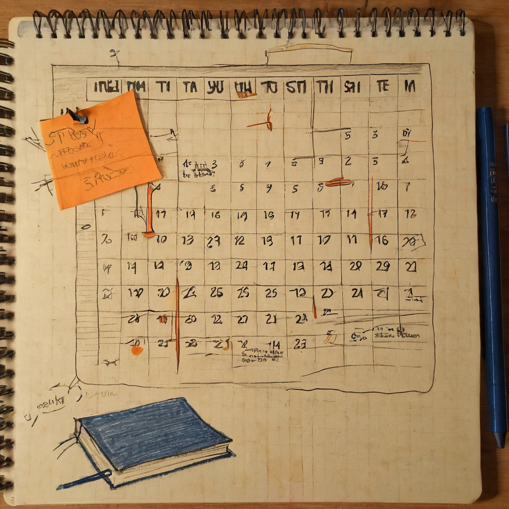

Some bookmarks are not about a tool or a launch. They are about a habit. That is what stopped me on this one. No thread, no pitch, just a calendar and a simple line about what it means.
@Michelangeloxch posted a friendly afternoon greeting along with an image that looks like a personal calendar or time-tracking graphic tied to something called TangTalk. The framing is what makes it interesting: he describes it as more than a record of hours put into the project. He calls it his personal calendar of time spent with the people following along. There is no link, no roadmap, no technical detail. Just the image and the sentiment.
I do not have outside context on TangTalk itself, so I am not going to guess at what it does or where it is headed. What I can talk about is the idea in the post, because it is a good one on its own.

Builders and community leads talk a lot about consistency, but consistency is hard to show. Anyone can say they show up every day. Fewer people turn that into something visual. A calendar, a streak, a heatmap, whatever form it takes, gives people outside the project something concrete to look at instead of just trusting the vibes.
This connects to a theme that shows up a lot in small teams and solo builders: turning scattered effort into a repeatable, visible system. It is the same instinct behind commit graphs on GitHub or daily posting streaks. The tool matters less than the discipline of tracking it and sharing it honestly.
What it does: Gives a simple visual record of time invested, shared publicly instead of kept private.
Who it helps: Community members who want some sense of whether a project is actually being worked on day to day, not just talked about.
Why builders should care: A public time log is a low-effort trust signal. It does not require a big announcement or a technical update, just a habit of showing up and letting people see it.
What still needs work: Without more context on TangTalk, I cannot say how this calendar is generated, whether it is manual or automated, or what it is actually measuring. That is fine. Not every bookmark needs to resolve into a full picture.
What I would test first: If you run a small project or community, try keeping your own simple version of this, even a basic streak tracker, and see if people respond to seeing the effort rather than just the output.
I like this one for what it is, a small, human gesture. @Michelangeloxch did not post a big update or a sales pitch, he posted a calendar and a thank you. That is worth noticing on its own. I do not know enough about TangTalk to say much about the project itself, but the instinct to turn daily effort into something visible and to frame it as time spent with people rather than just time spent working is a good one. More builders could stand to show their work this plainly.
I will keep an eye on whether TangTalk shares more about what it actually is. In the meantime, the bigger idea here, public, honest tracking of effort, is worth watching for in other projects and communities too. It is a small habit that says more than most announcements do.
Source: X post by @Michelangeloxch, https://x.com/i/web/status/2077641308240228739, retrieved on 2026-07-16.
External references: none provided in the source post.